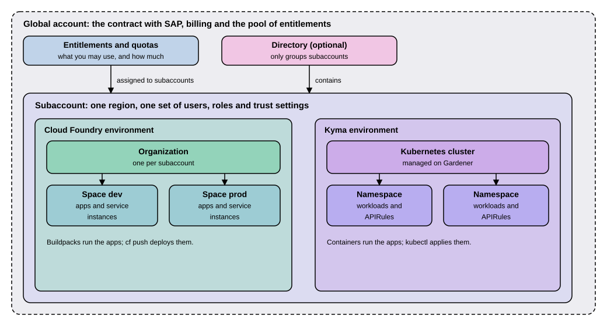

SAP BTP Account Model
|
This content was generated with the assistance of AI and should be verified against the official documentation before being relied on in production. |
Before you can run anything on SAP Business Technology Platform (SAP BTP), you need a place to run it in, and that place has a fixed shape. Think of a company that rents office space: there is one rental contract, the contract says how much space and which services you may use, and inside the building there are separate rooms, each with its own keys. The SAP BTP account model is that arrangement. A global account is the contract, subaccounts are the rooms where applications run, directories are optional folders that group rooms, and entitlements and quotas say how much each room may use. This page explains those parts, how the Cloud Foundry and Kyma environments sit inside a subaccount, and the two ways SAP sells the platform. It applies to the SAP BTP documentation as read on 2026-11-13. The Cloud Application Programming Model (CAP) projects that this site builds, with CAP Node.js 10.2 (@sap/cds 10.2.2, Node.js 22.12 or newer) and CAP Java 5.2 (Java 21 or newer, 25 recommended), are deployed into a subaccount of this kind. Every command on this page needs an SAP BTP account, so nothing here was run; the commands are taken from the official btp CLI pages.
Before you read
-
Deployment Options: the difference between running SAP software yourself and consuming it as a service, which is the background for the idea of a platform account.
-
Transports and Change Management: how changes reach production, which matters when you plan separate development, test and production subaccounts below.
-
A rough idea of what a container and a Kubernetes cluster are helps in the Kyma part; the section on Kubernetes cluster setup and administration covers it.
Key terms
-
SAP BTP: SAP’s platform for building, extending and integrating business applications in the cloud, documented as SAP Business Technology Platform.
-
Global account: the realization of the contract with SAP, from which subaccounts, members, entitlements and quotas are managed.
-
Subaccount: the unit, tied to one region, in which you deploy applications, use services and manage subscriptions.
-
Directory: an optional folder that groups subaccounts and other directories.
-
Entitlement: your right to provision and consume a service plan.
-
Quota: the numeric quantity of a service plan that you may consume.
-
Cloud Foundry environment: the environment of a subaccount that organizes applications and services in a Cloud Foundry org and its spaces.
-
Kyma environment: the environment of a subaccount that provides managed Kubernetes clusters based on the open-source project Kyma.
The product name
The documented name of the platform is still SAP Business Technology Platform, written SAP BTP, and every topic of the SAP Help Portal read for this page uses it. SAP’s product page for the platform now says that SAP Business Technology Platform capabilities are a core part of SAP Business AI Platform, and one help page is titled with the new name. This page therefore keeps "SAP BTP" as the name, because that is what the account model topic, the btp CLI and the cockpit call it, and mentions the newer name so that you recognize it in SAP material.
The parts of the account model
The figure shows how the parts nest. Read it from the outside in: the contract on the outside, the subaccounts inside it, and the two environments inside a subaccount.

Global account
A global account is the realization of a contract that you or your company made with SAP. You use it to manage subaccounts, members, entitlements and quotas. SAP’s account model page adds that a global account is region- and environment-independent: it does not live in one data center, while each subaccount inside it does. The global account is where you receive the entitlements and quotas you bought and from where you hand them out to subaccounts.
Subaccount
A subaccount is where the work happens. In a subaccount you deploy applications, use services, manage your subscriptions, and manage members, authorizations and entitlements. These points matter for planning.
-
Subaccounts in a global account are independent from each other. SAP points out that this is important for security, member management, data management, data migration and integration when you plan the landscape.
-
Each subaccount is associated with one region, the physical location where its applications, data or services are hosted. The region does not have to be near you: SAP’s example is a team in the United States that operates a subaccount in Europe.
-
Global accounts and subaccounts are completely independent of user accounts. Who may work in a subaccount is a separate question, handled by member management.
For the running example, Example Trading Co. (EX01) plans a development, a test and a production subaccount for its partner dashboard, so that a faulty deployment in development can never reach production data. The page defines these names for teaching; they are not names from an SAP product.
Directory
A directory groups subaccounts and other directories to form a hierarchy. Using directories is optional, and you can still create subaccounts directly under the global account. The hierarchy can be up to 7 levels deep, with the global account always at the top and a subaccount always at the bottom, which leaves up to 5 levels of directories between them. Directories let you group and filter, and they let you monitor usage and costs for contracts that use the consumption-based commercial model.
Two optional features can be switched on per directory. Manage Entitlements lets you assign a quota from the global account to the directory, to be distributed to its subaccounts. Manage Authorizations lets certain users manage the directory, for example its entitlements, and can only be used together with Manage Entitlements. SAP’s example of use: one directory per department, and inside each directory subaccounts for development, testing and production.
Labels
Labels are user-defined names, with up to 10 values each, that you attach to directories, subaccounts, subscriptions, service instances and environment instances so that you can find them again, for example a label "Landscape" with the value "Dev", "Test" or "Production". A subaccount also shows the labels of the directories above it. Labels replace what the platform earlier called custom properties; the --custom-properties parameter of the btp CLI is deprecated in favor of --labels.
Source: Account Model (SAP Help Portal)
Environments inside a subaccount
A subaccount offers environments, the runtimes in which your applications run. This page covers the two that run CAP applications in containers or buildpacks.
| Question | Cloud Foundry environment | Kyma environment |
|---|---|---|
What does enabling it create? |
A Cloud Foundry org, one per subaccount (a 1:1 relationship), with the same navigation level in the cockpit. |
One or more Kubernetes clusters (a 1:n relationship); you can create more than one right away or add clusters later. |
How do you subdivide it? |
Spaces inside the org. |
Namespaces inside each cluster. |
Is it an entitlement? |
No: Cloud Foundry is available by default to all subaccounts. |
Yes: a quota-based environment such as Kyma must first be assigned to the subaccount as an entitlement. |
What is it? |
The Cloud Foundry application runtime, whose orgs and spaces follow the Cloud Foundry concepts of roles. |
A managed Kubernetes application runtime based on the open-source project Kyma, with clusters on the open-source project Gardener. |
For Example Trading Co. this means one org per subaccount, with a space dev and a space prod in a Cloud Foundry setup, or one cluster per subaccount with a namespace for each application in a Kyma setup. The spaces and namespaces named here are teaching names.
The Kyma page says that the environment supports CAP out of the box, and CAP’s own deployment guides cover both targets: the guide for Cloud Foundry and the guide for Kyma, the latter describing a Kyma runtime that SAP manages. A page of this section covers the two environments in detail; this page stays at the level of the account.
Entitlements and quotas
The account model says what exists; entitlements and quotas say what you may use. On SAP BTP every external dependency, such as a database or a messaging system, is a service, and in this context multitenant applications and environments are considered services as well. Each service has one or more service plans, a plan being the representation of the costs and benefits of one variant of a service, for instance a database in different "T-shirt sizes".
-
An entitlement is your right to provision and consume a resource. In other words, entitlements are the service plans you are entitled to use.
-
A quota is the numeric quantity of a service plan that you may consume in the global account and its subaccounts.
Entitlements and quotas are bought and managed at global account level and distributed from there to subaccounts, which consume them. The global quota of a plan is either fixed, an upper limit for the whole global account (typical for the subscription-based model), or unlimited, with the units used at the end of the month determining the charge (typical for the consumption-based model). The administrator of the global account then assigns a plan to a subaccount in one of two ways.
-
A numeric assignment sets the maximum number of units the subaccount may consume, which is a way to control costs.
-
A non-numeric assignment simply grants access to the plan. SaaS application assignments are typically of this kind: a subaccount either subscribes to the application or it does not.
An administrator can also assign entitlements to a directory that has Manage Entitlements switched on and let the directory redistribute them to its subaccounts. A directory is only a way of grouping, so you cannot consume a service at directory level, but the quota assigned to a directory counts as used, which reserves it. In the Cloud Foundry environment, space quota plans can further limit how much each space uses; they limit and never enable, and without them one space can use up all the quota of a subaccount.
For Example Trading Co. the global account holds the contract, and an administrator gives the development subaccount a small numeric quota of each service and the production subaccount a larger one. A subaccount that was never given a plan cannot create instances of it, however many users work there.
Consumption-based and subscription-based
SAP BTP offers two commercial models for enterprise accounts, and they decide which entitlements a global account holds.
| Aspect | Consumption-based | Subscription-based |
|---|---|---|
What you get |
Access to all current and future services that are eligible for this model. |
Only the services you subscribed to, as agreed in your commercial agreement. |
Flexibility |
You can switch services on and off and change between them during the contract period. |
Additional services at extra cost require changing the contract with your sales representative or account executive. |
Cost |
The units used determine the charge at the end of the month. |
The services are used at a fixed cost, irrespective of consumption. |
Typical quota |
Unlimited at global account level. |
Fixed at global account level. |
The consumption-based model comes in the flavors SAP BTP Enterprise Agreement, Cloud Platform Enterprise Agreement and Pay-As-You-Go. You can use both models, either in separate global accounts or in the same one, but you cannot mix more than one flavor of the consumption-based model in the same global account.
Source: Commercial Models and Entitlements and Quotas
Working with the account model from the command line
The SAP BTP cockpit is the web interface for the account model. The btp command line interface (btp CLI) does the same from a terminal, which is useful for scripts. The next listing sets up the example landscape: log in, create a directory that manages entitlements, create a development subaccount in it, and give that subaccount a numeric quota. It requires an SAP BTP account; not run here. The placeholders in angle brackets, and the service and plan names my-service and my-service-plan, are the placeholder style of the official pages: replace them with your own values, and read real service and plan names from btp list accounts/entitlement.
btp login --sso
btp create accounts/directory --features D,E --display-name "EX01 Partner Dashboard" --description "Example Trading Co. partner dashboard"
btp create accounts/subaccount --display-name "ex01-dev" --region eu10 --subdomain ex01-dev-subdomain --directory <directory-id> --labels "{\"Landscape\": [\"Dev\"]}"
btp assign accounts/entitlement --to-directory <directory-id> --for-service my-service --plan my-service-plan --amount 5
btp assign accounts/entitlement --to-subaccount <subaccount-id> --for-service my-service --plan my-service-plan --amount 1Source: btp login, btp create accounts/directory, btp create accounts/subaccount and btp assign accounts/entitlement
Each command follows the official pages. btp login --sso opens a browser for single sign-on, and SAP recommends it or plain btp login. In --features D,E the letters stand for the DEFAULT and ENTITLEMENTS features. eu10 is the region used in the official examples, and the available regions are listed with btp list accounts/available-region. The --amount parameter is for plans with a numeric quota; for a plan without one, use --enable instead. The sum assigned to the subaccounts of a directory cannot exceed the quota of the directory. Creating a subaccount and assigning an entitlement both run in the background, so check the result with btp get accounts/subaccount and btp list accounts/entitlement. To enable a quota-based environment such as Kyma, assign it as an entitlement in the same way before enabling it. Creating a subaccount needs the global account or directory admin role.
Two more commands help in daily work. The next listing shows them and requires an SAP BTP account; not run here.
btp list accounts/subaccount --labels-filter "Landscape=Dev"
btp target --subaccount <subaccount-id>Source: btp list accounts/subaccount and btp target
The first command lists the subaccounts of the global account, including those in directories, filtered by label. The second sets a target, so that later commands run in that subaccount unless you override it with a parameter. To see the whole hierarchy of directories and subaccounts, SAP’s pages point to btp get accounts/global-account --show-hierarchy.
Planning a landscape
The account model is easier to change before applications depend on it, because a subaccount is bound to one region and its subdomain cannot be changed after creation. A few questions help.
-
Which environments do you need? A Cloud Foundry team and a Kyma team can share one global account and use different subaccounts.
-
Which separations matter? Because subaccounts are independent, put environments with different security, data or integration needs in different subaccounts, as Example Trading Co. does for development, test and production.
-
Who pays and who may spend? Use directories with entitlements to give each department a budget, and numeric quotas to cap what each subaccount can consume.
-
How will you find things later? Agree on labels, with consistent casing, because label names and values are case-sensitive.
Summary
-
A global account is the contract with SAP and the pool of entitlements and quotas; subaccounts, each in one region, are where applications run.
-
Directories are optional, can nest up to five levels deep between the global account and a subaccount, and can manage entitlements and authorizations for their subaccounts.
-
Enabling Cloud Foundry in a subaccount creates one org with spaces; enabling Kyma provisions one or more Kubernetes clusters with namespaces, after the environment has been assigned as an entitlement.
-
Entitlements say which service plans you may use, quotas say how many units; assignments to a subaccount are numeric or non-numeric.
-
The consumption-based model gives access to all eligible services and bills usage; the subscription-based model gives only the services you subscribed to at a fixed cost.
-
SAP BTP remains the documented name, while SAP presents its capabilities as part of SAP Business AI Platform.